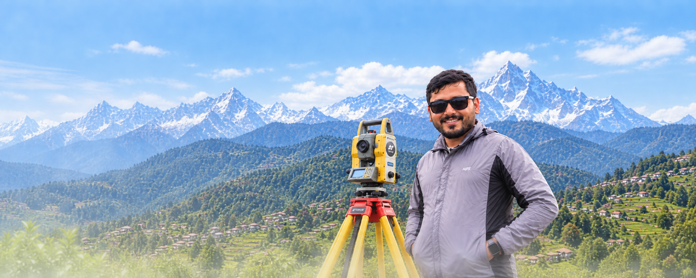
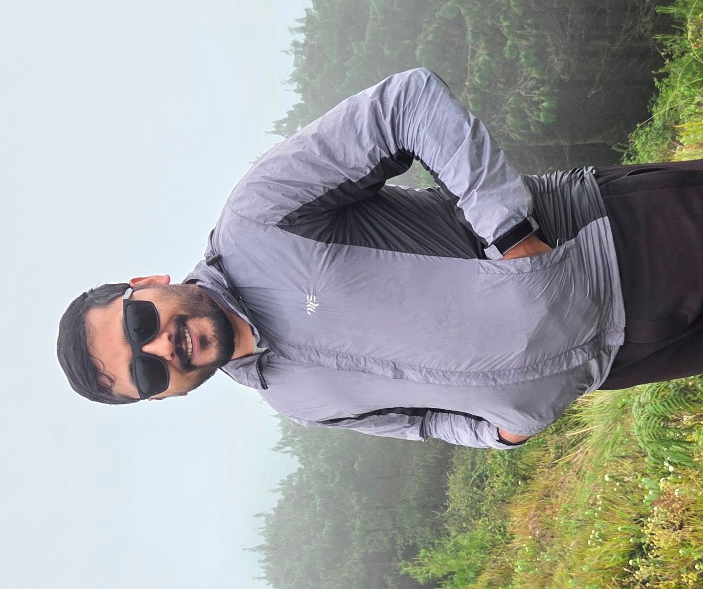

करिब ९ वर्षपेशागत अनुभव

नमस्कार, म
बाबु निरोज
Surveyor
नापी तथा भू-सर्वेक्षण क्षेत्रमा
करिब ९ बर्षको पेशागत अनुभव ।
“सही नापी, समुन्नत भविष्य”
नापी विभागनेपाल सरकार
नापी कार्यालयकार्यक्षेत्र
स्नातकBachelor's Degree
मेरो बारेमा
म बाबु निरोज हुँ। पेशागत रूपमा Surveyor का रूपमा नापी तथा भू-सर्वेक्षण क्षेत्रमा करिब ९ वर्षदेखि कार्यरत छु। भूमि, नक्सा, भू-उपयोग र प्रविधिको प्रयोगमार्फत समाज र विकासमा योगदान दिनु नै मेरो उद्देश्य हो।
पूरा परिचय पढ्नुहोस् →“प्रकृतिको
सही पहिचान,
समृद्ध भविष्यको
आधार ।”
विशेषज्ञता
Data
पेशागत अनुभव
Surveyor
नापी कार्यालय, नेपाल सरकार
नापी तथा भू-सर्वेक्षण
विभिन्न सरकारी तथा फिल्ड सम्बन्धी कार्य
नक्सा / अभिलेख
नक्सा, फिल्ड विवरण तथा प्राविधिक अभिलेख
Mapping / GIS
Spatial data र geospatial अभ्यास
Survey Assistant
सर्वेक्षण उपकरण र फिल्ड अनुभव
मेरा काम / परियोजना

नक्सा तथा सर्वेक्षण कार्य
विभिन्न क्षेत्रमा गरिएको नक्सा तथा सर्वेक्षण कार्य।
विस्तृत हेर्नुहोस् →GIS अध्ययन र नक्सांकन
Spatial data विश्लेषण तथा नक्सा तयार गर्ने अभ्यास।
विस्तृत हेर्नुहोस् →Field Survey अनुभव
फिल्डमा गरिएको नापजाँच, उपकरण प्रयोग र अनुभव।
विस्तृत हेर्नुहोस् →लेख तथा विचार
भू-सर्वेक्षण किन महत्वपूर्ण छ ?लेख छिट्टै थपिनेछ
GIS को सम्भावना र नेपाललेख छिट्टै थपिनेछ
Field मा सिकेका केही कुरालेख छिट्टै थपिनेछ
नक्सा र भूगोलसँग मेरो यात्रालेख छिट्टै थपिनेछ
नापीमा बदलिँदो प्रविधिलेख छिट्टै थपिनेछ
रुचिहरू
यात्राफोटोग्राफीप्रकृतिनक्साप्रविधिलेखन
ग्यालरी
सम्पर्क गर्नुहोस्
पेशागत संवाद, सहकार्य वा सामान्य सम्पर्कका लागि तलको फारममार्फत सन्देश पठाउन सक्नुहुन्छ।
नामबाबु निरोज
इमेलnblove@example.com
फोन+९७७ · सम्पर्क नम्बर
स्थाननेपाल